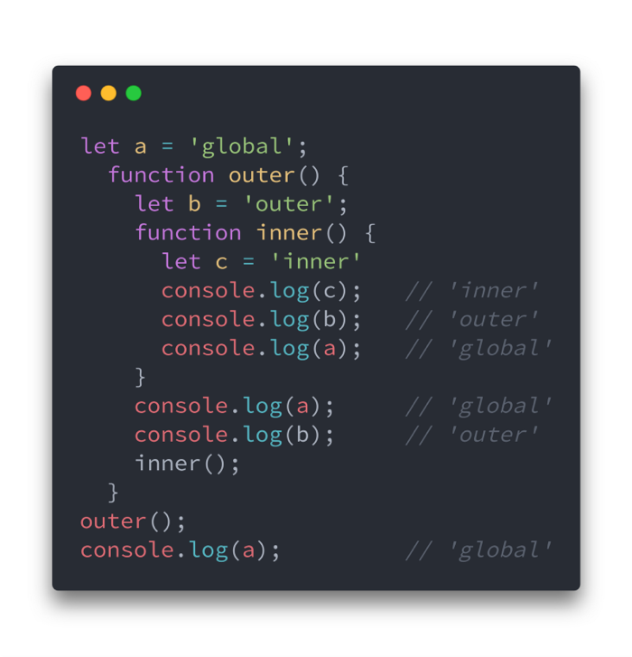

Замыкания в JavaScript для начинающих
Замыкания — это одна из фундаментальных концепций JavaScript, вызывающая сложности у многих новичков, знать и понимать которую должен каждый JS-программист. Хорошо разобравшись с замыканиями, вы сможете писать более качественный, эффективный и чистый код. А это, в свою очередь, будет способствовать вашему профессиональному росту.
Материал, перевод которого мы публикуем сегодня, посвящён рассказу о внутренних механизмах замыканий и о том, как они работают в JavaScript-программах.
Что такое замыкание?
Замыкание — это функция, у которой есть доступ к области видимости, сформированной внешней по отношению к ней функции даже после того, как эта внешняя функция завершила работу. Это значит, что в замыкании могут храниться переменные, объявленные во внешней функции и переданные ей аргументы. Прежде чем мы перейдём, собственно, к замыканиям, разберёмся с понятием «лексическое окружение».
Что такое лексическое окружение?
Понятие «лексическое окружение» или «статическое окружение» в JavaScript относится к возможности доступа к переменным, функциям и объектам на основе их физического расположения в исходном коде. Рассмотрим пример:
Здесь у функции inner() есть доступ к переменным, объявленным в её собственной области видимости, в области видимости функции outer() и в глобальной области видимости. Функция outer() имеет доступ к переменным, объявленным в её собственной области видимости и в глобальной области видимости.
Цепочка областей видимости вышеприведённого кода будет выглядеть так:
Обратите внимание на то, что функция inner() окружена лексическим окружением функции outer(), которая, в свою очередь, окружена глобальной областью видимости. Именно поэтому функция inner() может получить доступ к переменным, объявленным в функции outer() и в глобальной области видимости.